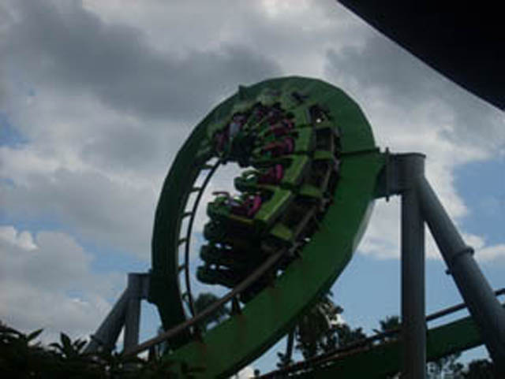
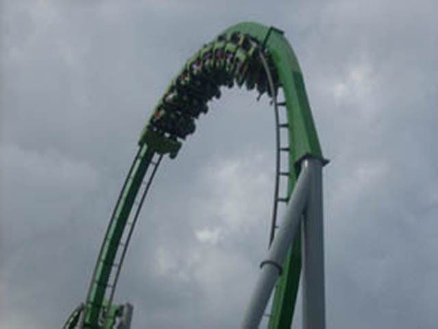
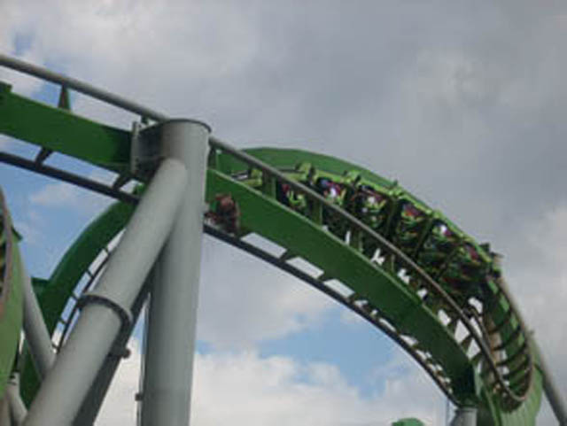
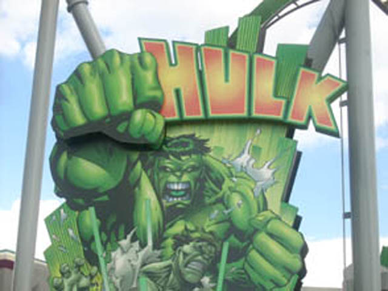

| |
Incredible Hulk Review

Today at the Universal Orlando Resort, we'll be reviewing the Incredible Hulk for you. While in line, you notice alot of sciency theming, some boring news about some stupid new invention on the TVs, and strange colorful bubbly liquid in big tubes. Then we get into the train. After getting in the train and pulling down the OTSRs, we are off. We roll out of the station and up into what appears to be a lifthill. Then we hear some guy named Bruce Banner shout "Everything looks good!!! I think, this time, it's going to work!!!" But after hearing a warning about something, we quickly realize that Bruce Banner was full of sh*t. Everything does not look good. And I think, this time, it's NOT going to work. But before we can comprehend anymore, we launch up the hill. Yes, that's right. B&M has finally made a launched coaster!!! =) (Well actually, they didn't make the launch, someone else did. But really, who gives a sh*t.) We fly out of the tube and once we see the light of day, we know that we are going to fly into one of the most awesome elements ever. A Heartline Spin. This alone makes the ride kick major ass. A well themed launch into a heartline spin, you can automatically tell that this ride is going to kick ass. We get flung upsidedown above Islands of Adventures, then we exit out of the heartline spin, we drop back down towards the lake. We gain some nice speed coming down. Once we come down, we soar up into what may be the biggest cobra roll ever. We soar up into the sky to go upsidedown, twist out right, get a nice view of IOA, then flip back upsidedown and roar straight back down towards the ground. Then we soar into a humongus loop. We flip upsidedown and we we roar back down, we see a small little tunnel that goes under the walkway. We head into the tunnel and get blinded by a bunch of mist. By the time the mist clears up, we are heading up in a twisted turn that then leads into a little straight track that takes us straight into a corkscrew. After getting a bit of whip through the corkscrew, we drop to the ground and head into another smaller vertical loop. While going through the loop, we can see the midcourse brakes upsidedown. After Loop #2, we curve up into another upward turn. And up next is definetly the most underrated part of the ride. While you begin to head down, you twist to the right into a small curved drop to the ground. That jolt to the left was one of my favorite parts of the ride believe it or not. (I'm not counting the launch/heartline spin.) But yeah, that jolt is really alot of fun. We then turn up into the midcourse brakes. Of course on Hulk, it's more of the three quarters course brake. We lose some speed, we get a lovely view of Loop #2. But then we drop out of the midcourse brakes and into a corkscrew. There's a little bit of airtime on the drop, and the corkscrew gives us some nice whip as well. You then head into a small turnaround and head into a small final helix. While this part of the ride isn't that intense, it is alot of fun. There is no black out oppertunities on this fake helix of death. Then we glide into the final brake run. I would totally recommend riding this if you are ever at Universal Orlando Resort. It's a rare type of B&M, has an awesome launch into zero G roll, and it is incredibly easy to find. So yeah. Get on this ride. It is awesome.
9/10
Location: Universal Orlando Resort
Opened: 1999
Built by: B&M
Last Ridden: November 20, 2007
Incredible Hulk Photos







Home
|